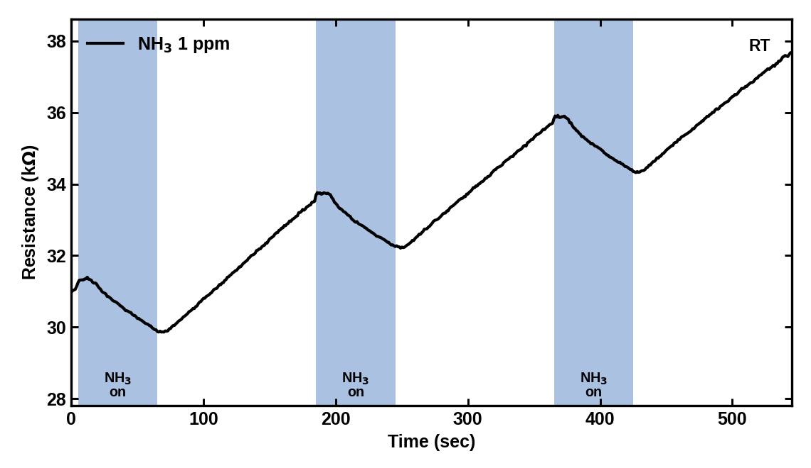
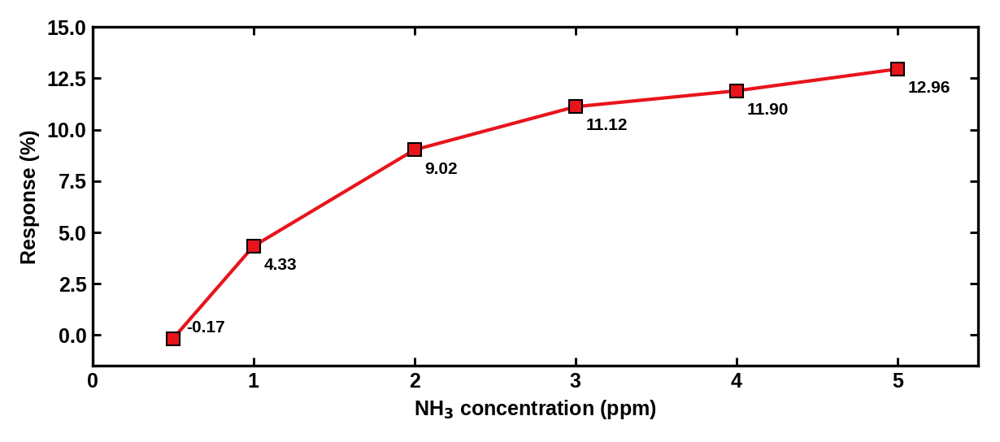
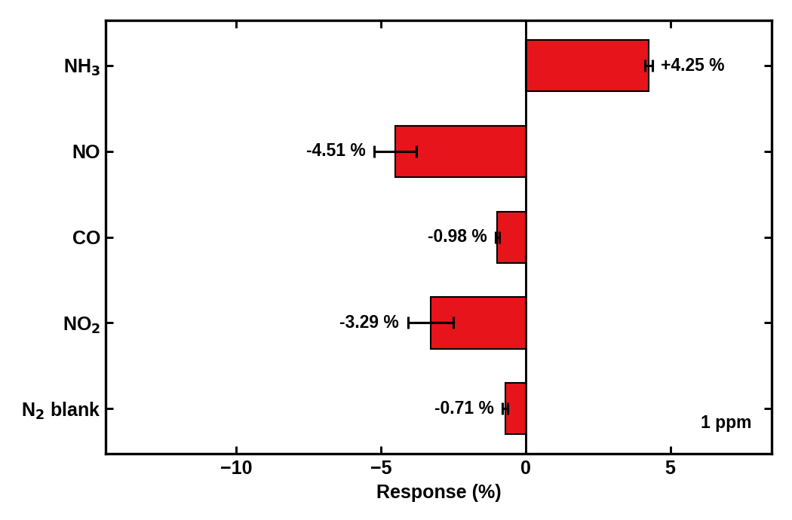

01 · OVERVIEW
요구 사양과 연구 방향
축사 부지경계의 NH3를 상시 감시하는 센서를 목표로, 악취방지법 시행규칙 별표 3의 기준(기타지역 1 ppm)에 맞춰 요구 사양을 정했습니다.
02 · MATERIAL
소재 선정과 합성
- 선행 산화물·MBene 센서가 F 말단기로 NO2를 겨냥한 것과 달리, MBene의 OH 말단기로 NH3를 겨냥하는 방향과 소재 결정
- MXene과 MBene을 식각 경로별로 3배치 합성하고 Stokes 식으로 침강 분리 조건 산출
- 용액공정 IZO 채널 위에 MXene, MBene을 올린 센서 제작
03 · MEASUREMENT
가스 측정 시스템 구축
측정 시스템 재셋업과 안전 검증
- 상황
- 오래 쓰지 않던 가스 측정 장비와 MFC로 NO2, NH3 같은 유독가스를 측정해야 함
- 확인
- 누출에 대비해 N2와 Air로 먼저 셋업하고 응답을 아는 MoS2 기준 소자로 검증. 가스를 바꿔도 저항이 변하지 않아 가스 공급 문제로 판단
- 조치
- 라인을 추적해 연결 순서 오류와 느슨한 이음부를 바로잡고, 그 이음부 쪽에 가스 검출기를 둔 뒤 유독가스 사용
- 결과
- 기준 소자의 정상 응답을 확인한 뒤 측정 시작
기판 누설 경로1차 측정의 노이즈와 저항 불안정에서 기판에 수에서 수백 MΩ의 누설 경로를 확인하고, 세정과 선별로 개방 상태를 확보해 응답과 노이즈를 분리
UV 조사 배제UV를 켜면 저항이 1.96에서 1.42 kΩ로 떨어져 가스 응답이 묻혀, UV 없이 측정하는 조건으로 결정
04 · RESULTS
상온 NH3 감지 특성
 농도별 응답 MBene/IZO, NH3 0.5 – 5 ppm, 각 60초 노출, 상온. 파란 구간이 NH3 노출
농도별 응답 MBene/IZO, NH3 0.5 – 5 ppm, 각 60초 노출, 상온. 파란 구간이 NH3 노출

NH3 1 ppm 반복 노출 60초 노출, 120초 회복
농도별 응답률 NH3 0.5 – 5 ppm1 – 5 ppm
응답 4.33 – 12.96%
이론 검출 한계는 1 – 3 ppm 선형 구간 외삽값. 조사한 MBene 센서 문헌 범위에서 상온 ppm급 NH3 감지 보고는 확인되지 않음.
05 · SELECTIVITY
선택성과 소재 대조

선택성 MBene/IZO, 각 가스 1 ppm. NH3만 저항이 감소하고 NO, CO, NO2는 증가
소재 대조 실험
- 상황
- NH3 응답이 MBene에서 나오는지, IZO 채널에서 나오는지 구분 필요
- 확인
- 같은 30초 노출에서 bare IZO는 NH3 1 ppm에 −0.26%, MBene/IZO는 +2.03%
- 결과
- 같은 IZO 위 MXene은 NO2에만, MBene은 NH3에 반응하는 소재별 선택성 확인
응답률 부호: +는 저항 감소, −는 저항 증가.
06 · LESSONS
배운 점
- 처음 접한 분야도 요구 사양과 소재의 표면 특성에서 출발하면 연구 방향을 정할 수 있음
- 새 측정 시스템의 결과는 기준 소자와 대조 소자로 장비와 소재의 기여를 분리한 뒤에 주장할 수 있음
출처: 캡스톤설계 2 연구실 발표 자료 (2026.10.12), 악취방지법 시행규칙 [별표 3]
← 프로젝트 목록